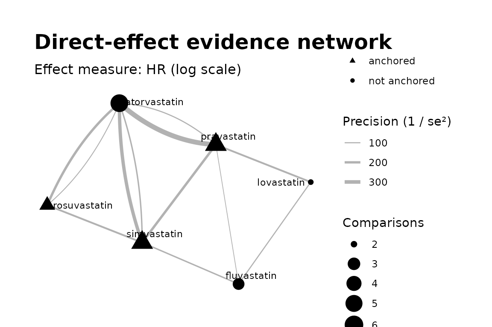
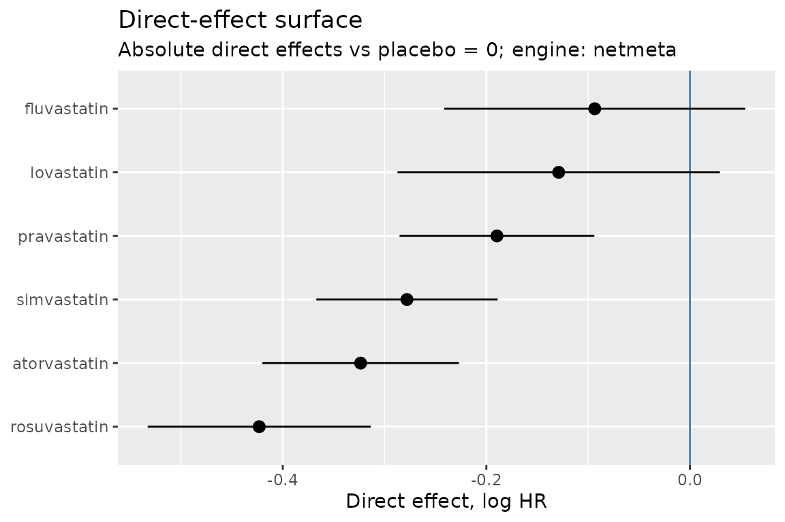

What directeffect is
Comparative-effectiveness studies mostly estimate relative effects: drug A versus drug B from an active-comparator design. Each such estimate constrains only the difference between the two drugs’ latent direct effects. The researcher ultimately wants each drug’s direct effect versus placebo — and almost none of the evidence speaks to that directly.
directeffect reconstructs the direct effects from the network of comparative estimates, keeping two questions deliberately separate:
- The surface. Are my comparative estimates internally coherent, and what relative structure do they imply? Comparisons alone answer this.
- The sea level. Where does that structure sit relative to placebo = 0? Only absolute (placebo-anchored) evidence answers this.
The API mirrors the separation: direct_effect_network()
→ fit_surface() → anchor_surface().
The example data
The package ships a realistic but entirely simulated
statin evidence base — real drug names, fake numbers (see
?example_truth for the invented truth they were generated
from). Twelve head-to-head estimates among six statins, plus three
placebo-controlled anchor trials, all log hazard ratios:
library(directeffect)
example_comparisons
#> study_id target comparator estimate std_error
#> 1 rct_ator_simv_1 atorvastatin simvastatin -0.134 0.06
#> 2 rct_ator_simv_2 atorvastatin simvastatin 0.105 0.09
#> 3 rct_ator_prav_1 atorvastatin pravastatin -0.132 0.05
#> 4 rct_ator_prav_2 atorvastatin pravastatin -0.174 0.10
#> 5 rct_rosu_ator_1 rosuvastatin atorvastatin -0.165 0.07
#> 6 rct_rosu_ator_2 rosuvastatin atorvastatin -0.050 0.11
#> 7 rct_rosu_simv_1 rosuvastatin simvastatin -0.086 0.08
#> 8 rct_simv_prav_1 simvastatin pravastatin -0.086 0.07
#> 9 rct_prav_lova_1 pravastatin lovastatin -0.029 0.08
#> 10 rct_lova_fluv_1 lovastatin fluvastatin 0.014 0.10
#> 11 rct_simv_fluv_1 simvastatin fluvastatin -0.162 0.09
#> 12 rct_prav_fluv_1 pravastatin fluvastatin -0.207 0.12
example_anchors
#> study_id drug reference estimate std_error
#> 1 rct_simv_plac simvastatin placebo -0.307 0.06
#> 2 rct_prav_plac pravastatin placebo -0.219 0.07
#> 3 rct_rosu_plac rosuvastatin placebo -0.332 0.08This is the shape real statin evidence has: most trials compare one
active drug against another, while a few landmark placebo trials carry
the absolute information. The input formats are documented in detail at
?directeffect_formats.
1. Build the network
Construction validates the tables and computes the evidence graph — no model is fitted yet:
de <- direct_effect_network(
example_comparisons,
anchors = example_anchors,
effect_measure = "HR"
)
de
#> <directeffect_network>
#> Effect measure: HR (log scale)
#> Drugs: 6
#> Comparisons: 12
#> Anchors: 3
#> Components: 1
#> Use check_connectivity() for the per-component identifiability report.Before fitting anything, inspect the evidence.
check_connectivity() reports, per connected component,
whether absolute effects are even identifiable there — a component with
no anchor supports relative effects only, and the package will never
pretend otherwise:
check_connectivity(de)
#> Component 1:
#> 6 drugs
#> 12 comparisons
#> 3 absolute anchors
#> absolute effects identifiable
plot_network(de)
2. Fit the surface
Surface fitting deliberately ignores the anchors and fixes an
arbitrary reference drug at 0 — only relative positions are identified.
Two independent engines are available, "netmeta"
(frequentist) and "stan" (Bayesian); for networks with one
comparison per study — like this one — they fit the identical model, and
they always return the identical contract. (Multi-arm trials, several
comparisons sharing a study_id, are supported by the
netmeta engine only; the Stan engine refuses them rather than mis-treat
correlated rows as independent.)
surface <- fit_surface(de, engine = "netmeta")
surface
#> <directeffect_fit>
#> Engine: netmeta
#> Effect measure: HR (log scale)
#> Reference: atorvastatin (arbitrary; surface is relative)
#>
#> drug estimate std_error lower upper
#> atorvastatin 0.000 0.000 0.000 0.000
#> fluvastatin 0.230 0.070 0.092 0.368
#> lovastatin 0.195 0.075 0.047 0.342
#> pravastatin 0.134 0.039 0.058 0.209
#> rosuvastatin -0.100 0.049 -0.196 -0.003
#> simvastatin 0.046 0.038 -0.030 0.1213. Set the sea level
Anchoring is a distinct, revisable second step. The placebo trials position the whole structure against placebo = 0 while keeping their own uncertainty:
absolute <- anchor_surface(surface)
absolute
#> <directeffect_fit>
#> Engine: netmeta
#> Effect measure: HR (log scale)
#> Reference: placebo = 0 (sea level; absolute direct effects)
#>
#> drug estimate std_error lower upper
#> atorvastatin -0.324 0.049 -0.420 -0.227
#> fluvastatin -0.094 0.075 -0.241 0.054
#> lovastatin -0.129 0.081 -0.287 0.029
#> pravastatin -0.190 0.049 -0.285 -0.094
#> rosuvastatin -0.423 0.056 -0.533 -0.314
#> simvastatin -0.278 0.045 -0.367 -0.189absolute$effects is a plain data frame (schema at
?directeffect_formats) ready for tables or further
analysis.
plot_effect_surface(absolute)
plot_sea_level(absolute)
The same calls draw an unanchored fit too — but then the plot labels
the positions as relative to an arbitrary reference, never as absolute
effects, and plot_sea_level() refuses outright: a relative
surface has no sea level.
4. Check the evidence
Two quick diagnostics ask whether the comparative estimates actually agree with one another:
edge_residuals(surface)
#> target comparator observed predicted residual
#> 1 atorvastatin simvastatin -0.134 -0.04552752 -0.088472478
#> 2 atorvastatin simvastatin 0.105 -0.04552752 0.150527522
#> 3 atorvastatin pravastatin -0.132 -0.13390032 0.001900324
#> 4 atorvastatin pravastatin -0.174 -0.13390032 -0.040099676
#> 5 rosuvastatin atorvastatin -0.165 -0.09962052 -0.065379480
#> 6 rosuvastatin atorvastatin -0.050 -0.09962052 0.049620520
#> 7 rosuvastatin simvastatin -0.086 -0.14514804 0.059148042
#> 8 simvastatin pravastatin -0.086 -0.08837280 0.002372802
#> 9 pravastatin lovastatin -0.029 -0.06062088 0.031620877
#> 10 lovastatin fluvastatin 0.014 -0.03540762 0.049407620
#> 11 simvastatin fluvastatin -0.162 -0.18440130 0.022401299
#> 12 pravastatin fluvastatin -0.207 -0.09602850 -0.110971504
#> standardized_residual leverage
#> 1 -1.92054499 0.4105256
#> 2 1.84977026 0.1824558
#> 3 0.05957327 0.5929831
#> 4 -0.43449393 0.1482458
#> 5 -1.31853456 0.4982310
#> 6 0.50489689 0.2017630
#> 7 0.99646417 0.4494746
#> 8 0.04354059 0.3939082
#> 9 0.73954227 0.7143450
#> 10 0.73954227 0.5536641
#> 11 0.37070201 0.5491714
#> 12 -1.10945703 0.3052325
cycle_consistency(surface)
#> cycle n_edges
#> 1 fluvastatin - pravastatin - lovastatin - fluvastatin 3
#> 2 fluvastatin - pravastatin - atorvastatin - simvastatin - fluvastatin 4
#> 3 pravastatin - atorvastatin - simvastatin - pravastatin 3
#> 4 rosuvastatin - atorvastatin - simvastatin - rosuvastatin 3
#> inconsistency std_error z
#> 1 0.192000000 0.17549929 1.09402153
#> 2 0.124938462 0.16429336 0.76045960
#> 3 -0.006061538 0.09691392 -0.06254559
#> 4 -0.106314480 0.11126525 -0.95550484Validating the surface covers these in depth.
Where next
- How directeffect works explains the method from scratch — no background beyond basic statistics assumed — and checks the package against the example data’s known truth.
- netmeta vs. Stan shows the same surface reconstructed by two independent engines — the package’s built-in correctness check.
- Validating the surface covers edge residuals, cycle consistency, and simulation-based recovery.